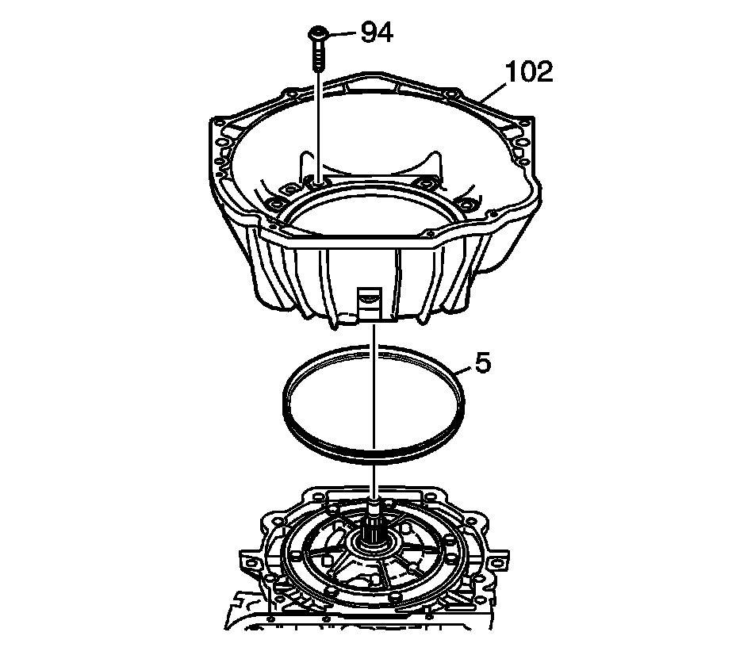

Converter Housing Installation
Converter Housing Installation
Tools Required
J 41510 T-50 Plus Bit

Important:
^ Ensure the converter housing and case face are clean before installing a new pump seal.
^ When installing a new oil pump seal (5), the seal will protrude slightly above the case surface. The oil pump seal is a wedge design that will conform to the surfaces between the oil pump body and the transmission case as the converter housing (105) is installed.
Install the oil pump seal (5). Seat oil pump seal (5) by hand, between pump body and case. Ensure the seal is evenly seated.
1. Install the converter housing (102).
Notice: Refer to Fastener Notice.
2. Using the J 41510, install the converter housing bolts (94) to the transmission case.
^ Tighten converter housing bolts evenly in a star pattern sequence.
^ Tighten the converter housing bolts (94) to 65-75 N.m (48-55 lb ft).